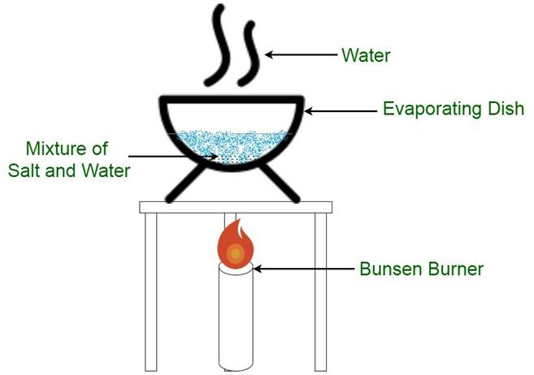
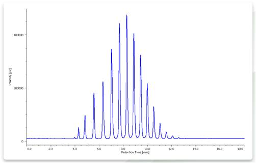

    
<h1 style="font-size:20px;text-align:center;margin-top: 50px; margin-bottom: 50px;">Home of Separation and Characterization of Materials</h1>

<h1 style="font-size:20px;text-align:center;margin-top: 50px; margin-bottom: 50px;"> Ping Li and Qing Chen, experts in separation and materials sciences, can help you with any questions you may have in this field</h1>

<dir style="text-align:center;">







</dir>


<hr style="width:60%; margin-top: 10px; margin-bottom:50px;">


<dir style="text-align:center;"><a style="font-size:20px;background-color: red;padding: 15px 35px 15px 35px;color:white;"href="HPLC _ Automate.video.html"/>Read more</a></dir>

<hr style="width:60%; margin-top: 10px; margin-bottom:50px;">

<dir style="text-align:center;"><a style="font-size:20px;background-color: red;padding: 15px 35px 15px 35px;color:white;"href="https://en.wikipedia.org/wiki/High-performance_liquid_chromatography"/>Read more in wikipedia.org</a></dir>


